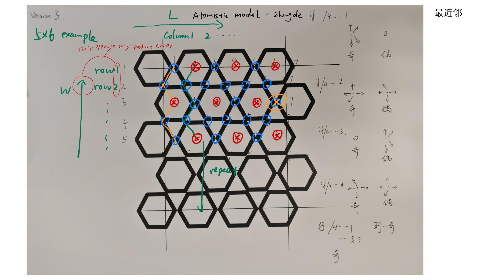

For the production periodic model, see the periodic cell and bond companion. These snapshots show the retained legacy open-boundary branch (bc=1).
Schematic cell view. The outlined 4-row × 2-column motif is an illustration of the code’s repeating parity pattern. Spacing is arbitrary; physical lattice vectors, Sn positions, stacking, and crystallographic site labels remain unresolved. The finite array is exported from the current MATLAB open-boundary branch.
01 / Illustrated motif
Arbitrary display units02 / The same array entries
One-based row and column indices. Colors mark code easy-axis classes. The dot is an empty slot (atomtype = 3); occupied entries have atomtype = 1.
Reading the cell
The dashed outline spans the interior code pattern’s four rows and two columns. It is a bookkeeping repeat, not a measured crystallographic cell. The drawing follows the staggered triangles of notebook pages 19–20.
Changing repetition regenerates a finite patch with the code’s terminal-column omissions. It does not tile the already-terminated edge. Every visible occupied marker corresponds to exactly one simulated array entry; empty markers carry no magnetic moment.
Solid links show the union of current open-boundary exchange connections. They do not imply equal coupling in both directions. The interaction explorer exposes those weights.
Spin inset: y →, z ↑
Initial state ≠ relaxed state
Notebook evidence and unresolved physical mapping
The historical drawing is notebook page 19; its occupation table appears on page 20. The original warns about the opposite directions of W and increasing row indices. Initial spins and easy axes here come from the current source, not from interpreting the handwritten arrows.

REFERENCE MISSING: a numerical lattice/basis, exact code-to-crystal labels, physical termination, and directed DMI-vector mapping. See the approved visualization scope and audit. This viewer supplies no structure input to the solver.